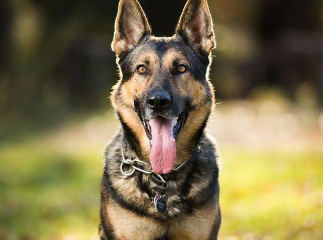
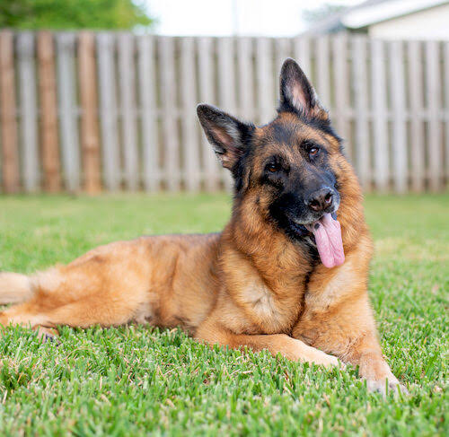

Welcome to Glory's Pet Page (DOG)
The dog is a domesticated descendant of the wolf. The dog derived from an ancient, extinct wolf, with the modern grey wolf being the dog's nearest living relative. The dog was the first species to be domesticated, by hunter-gatherers over 15000 years ago, before the development of agriculture.
 Gestation period: 58-68 days
Scientific name: Canis lupus familiaris
Lifespan: 10-13 years
Height: 15-110cm(At shoulder)
Daily sleep: 12-14 hours
Kingdom: Animalia
5 Amazing facts about dogs
- Their sense of smell is at least 40x better than ours
- Some dogs are incredible swimmers
- Dogs don't sweat like we do
- Dogs can sniff at the same time as breathing
- Some are fast and could even beat a cheetah
